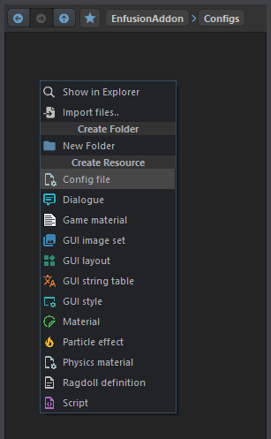
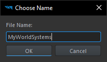
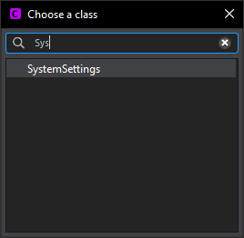
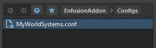
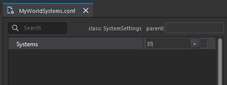
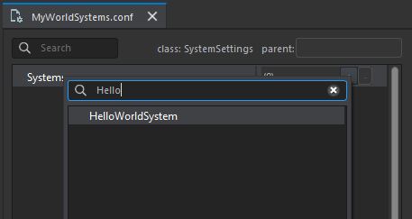
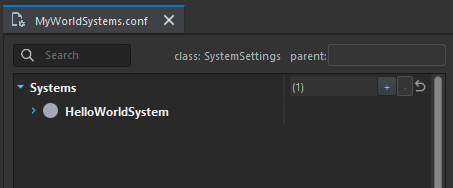
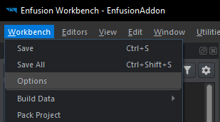
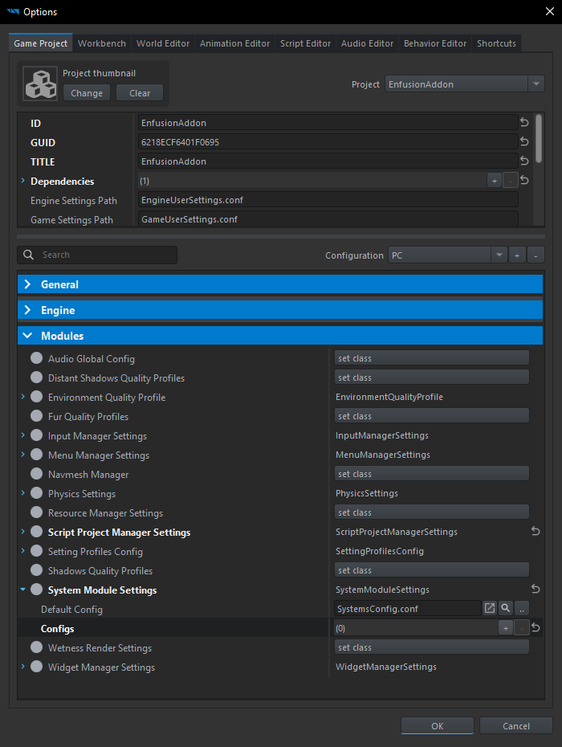
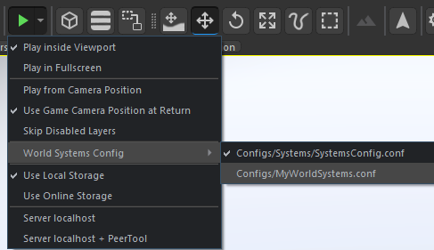

Table of Contents
Introduction
World systems are means to perform some operations at various stages of world update loop. They are meant to complement entities and their components. Usually world system implements some feature using entities and components in the world, similar to how a puppeteer would use puppets to perform a stage play.
World systems differ from entities and components in a few ways:
- Only one instance of particular world system type can be created for particular world. On the other hand, there can be many instances of single entity type in a world, and each entity instance may have possibly multiple components of same type on it.
- Entities can be organized into hierarchies and have position and orientation in the world. World systems do not - while they are tied to the world, they do not exist on specific location inside of it.
- Entities are updated one after another, and order in which their updates happen, is not defined. World systems can affect their order of updates through dependencies between them.
- World file holds all entities and components which will be created in the world when it is loading (though more entities may be created after gameplay starts). What world systems will be instantiated is specified using a config file that is independent of the world.
To demonstrate how world systems and entities with components would be used to build gameplay, let's use a simple FPS game where players spawn on spawn points placed in map. Game supports both deathmatch and team-deathmatch modes. Spawn points are represented as entities in the world. They are also assigned to specific teams either through property on entity itself, or on a component attached to entity that is dedicated to holding team affiliation information. We would then implement logic for score counting and player spawning for our two game modes using world systems. By switching configuration of these systems, we can run the map in deathmatch or team-deathmatch mode. If we are running in deathmatch mode, we can use all spawn points when determining where a player should spawn. If we are running in team-deathmatch mode, our respawn logic will be also taking into account team affiliation of each spawn point, ensuring players do not respawn in the middle of enemy territory.
Previous description has been intentionally very simple and vague. Goal was to give a rough idea of how things fit together without going into too many details. In a real game, there may be many more systems driving a world (tens to even hundreds), many of which may be shared across all game modes, while others would be specific to particular game mode. Mods may also alter behavior of systems, implement their own and organize them to create new game modes.
Creating and using world system
Let us take a look at how a world system is implemented and integrated in the game.
There are a few things necessary for every world system to work:
- Your world system class must be derived from BaseSystem or one of its subclasses.
- You need to override BaseSystem.InitInfo().
- In your implementation of
InitInfo()function, you set information about your world system so that engine knows how to handle it.
- Remarks
- Arma Reforger currently uses a legacy version of world systems. This document will refer to these as "legacy systems". Differences between current and legacy systems will be described as they come up. Unfortunately, not every feature is supported by legacy systems using current version on Arma Reforger is not possible yet.
Following code is an example of very simple world system, with each of the above points marked.
After we recompile and reload scripts in workbench, we are done defining our world system in script. But we won't be able to see it in game just yet. For that, we need to run the game with config that references our world system, so we either have to create new config, or add it to an existing one. In practice, you will most likely be adding your world system to existing config, but to demonstrate all steps of the process, we will be creating new config from scratch.
To create new world system config:
- In "Resource Browser", select directory where you want to place your config, right-click in an empty space and choose "Config file" in "Create Resource" section of the context menu.
- Type name of your config file.
- Choose "SystemSettings" as config class.
   
You should now see your new config file in "Resource Browser". From here on, the process is the same same as adding to an existing config:
- Double-click on the config file in "Resource Browser" to open it.
- Add new entry to "Systems" array using "+" button.
- Search for your new world system type, then select it by clicking on it.
  
You should now have your world system added to the end of the "Systems" array. When this config is used to run a world, world systems listed in the "Systems" array will be created.
Steps for running world with particular config are specific to each game so we won't go into that here. However, for testing, "World Editor" supports selecting one of predefined configs to use in "Play Mode". For our config to appear in this list, we need to add it there first:
- In main workbench window menu at the top, go to "Workbench", then "Options".
- In "Game Project" tab, in bottom part scroll down to "Modules" section, looking for "System Module Settings".
- Add your config to the "Configs" array.
  
If you now open some world in World Editor, you can go to "Play Mode" button dropdown menu, "World Systems Config" submenu, and see your config there. Clicking it will select it for use when entering "Play Mode". With your config selected, if you now enter play mode, you should see the message from HelloWorldSystem constructor appear in log. This shows us that our world system has been created and everything works as expected.
World systems can be queried at runtime as well. To try it out, you can paste following code into Remote Console of Script Editor while you are in play mode with HelloWorldSystem created (note that this script relies on GetGame() function, which might not be available in all projects).
World system information
Let us now go back to the HelloWorldSystem.InitInfo() function we implemented in our example. This function has only one purpose: to fill WorldSystemInfo instance with information about our system. Each world system has some meta-information associated with it, which is stored in WorldSystemInfo. Engine uses this information for various purposes: ordering of updates, dependencies between world systems, determining whether instance of world system should be created in some situation, and so on. We will be going over various WorldSystemInfo properties in related sections.
Main reason for this approach is to allow derived classes and mods to inherit as much of the information from the original system, making changes to only those properties they need to. Here is an example of how someone might decide to mod our HelloWorldSystem in order to introduce per-frame updates to it:
Important bits are:
- Calling InitInfo() implementation of base class (or class being modded), letting it do its thing.
- Making changes necessary for our implementation.
Default values of WorldSystemInfo properties are well defined, but you might not always be able to rely on them. Specifically, all world systems implemented in native code get to modify these default values in WorldSystemInfo before InitInfo() is called. The only system that guarantees to leave default values unchanged is BaseSystem. If it is necessary to ensure that WorldSystemInfo has everything set to default, one can use WorldSystemInfo.RestoreDefaults() to achieve it.
- Warning
- Using WorldSystemInfo.RestoreDefaults() should be considered last resort. In almost all cases, it is better to use more fine-grained operations, otherwise you risk maintenance issues further down the line.
With the exception of WorldSystemInfo.RestoreDefaults(), all WorldSystemInfo functions follow same naming convention, which puts together operation and property on which this operation happens. Based on operations available, there are two kinds of properties:
- Single-value properties, which only provide
Set*()operation. - Set-like properties, which provide
Add*(),Remove*()andClear*()operations.
- Warning
- While
InitInfo()function allows one to write anything they want, in most cases the implementation should be very simple. For this reason, there is no support for querying property values. Highly suspicious things include (but are not limited to):- any kind of control flow (branches, loops)
- function calls other than
super.InitInfo()or WorldSystemInfo member functions - side-effects other than changes in WorldSystemInfo
- reliance on any kind of state of classes or variables (including global or static variables)
System points
Every world system can register for updates at particular points in world update loop. We have already seen how this is done in previous example, so let's look at it again:
- Remarks
- Legacy system specifies system points using config property "System Points" which can be modified in world system config.
When we initialize WorldSystemInfo, we call WorldSystemInfo.AddPoint(), passing ESystemPoint.Frame as argument (marked by 2. in the example). This tells engine that our world system wants to update during this system point. If a world system is registered for updates on at least one system point, its OnUpdate() function will be called whenever that system point is hit during world update loop.
There are several system points that world systems can register to. For a full list you can refer to ESystemPoint. Many of them are related to entity events (see EntityEvent) and thus follow similar rules. For example, every iteration of world update loop is guaranteed to hit ESystemPoint.Frame (same as EntityEvent.FRAME) exactly once. On the other hand, ESystemPoint.FixedFrame (same as EntityEvent.FIXEDFRAME) may be hit zero or more times, depending on how much time one iteration of world update loop took and what is the fixed timestep logic used by particular game.
It is also possibly to affect the relative ordering of world systems that registered to same system point. To do so, WorldSystemInfo has ExecuteBefore and ExecuteAfter properties that can be used to specify ordering constraints.
- Warning
- Unless two systems have execution constraint specified between them (either through
ExecuteBeforeon first, or throughExecuteAfteron second), their ordering is undefined. In practice, these two systems without execution constraint will execute in some order, and that order may appear to stay the same for some time, but there is no guarantee that it will stay the same forever.
Here is an example of a system that uses multiple system points and specifies execution constraint on our HelloWorldSystem from previous examples:
- Remarks
- Legacy systems can provide virtual function to describe dependencies. This is similar to
ExecuteAfterin that when this function returnstruefor particular combination of point and system, it will be as if that combination of point and system was added toExecuteAfterset. There is noExecuteBeforeequivalent available for legacy systems.
This system registers to three system points (1.). It also adds one execution constraint using WorldSystemInfo.AddExecuteBefore() (2.). This constraint says that in ESystemPoint.Frame, MultiPointSystem.OnUpdate() must execute before HelloWorldSystem.OnUpdate().
Rest of the code demonstrates different behavior of various system points. It counts how many times was particular system point hit and prints messages with system point and its hit index. After enough hits have been printed, system disables itself, preventing further calls to OnUpdate().
Now add MultiPointSystem to our previously created config that already contains HelloWorldSystem and run a world using this config. Based on order in which log messages from each system appear, you can see that HelloWorldSystem and MultiPointSystem execute ESystemPoint.Frame in order we specified. You can try to change constraint from ExecuteBefore to ExecuteAfter to see messages appear in the opposite order. Or you can remove execution constraint altogether and see in what order they execute afterwards (though don't rely on it to stay the same).
- Note
- Instead of
ExecuteBeforeon MultiPointSystem, we could have setExecuteAfteron HelloWorldSystem which would have the same effect (of course, changing what system is passed to it as well). In most cases it doesn't matter where constraint is specified, but good practice is to prefer specifying it in system that you are maintaining, instead of adding or modding it into someone else' system.
Very likely you will also notice that number of hits at the end is different for each system point we registered. This is because of different system points having different relation to world update loop. ESystemPoint.SimulatePhysics might not appear at all if there are no objects that require simulation of physics. However, order in which these system points are hit (assuming they are hit at all) is guaranteed. Describing world update loop in detail is outside the scope of world systems, though.
World system configuration
World systems can declare variables that will be exposed in world system config. This is done by decorating variable declarations with Attribute. These variables will then be initialized by engine and world system can use them at runtime.
- Warning
- As of right now, config variables are initialized after constructor is executed. In other words, constructor will not see values from config file.
Here is an example of exposing variables in world system config:
- We declare member variable
m_ConfigIntwhich will be initialized from config. - We decorate it using Attribute to let engine know that
m_ConfigIntshould be exposed through config, as well as how to expose it (in this case, what should be its default value). - We print value of
m_ConfigIntwe obtained from config. - We demonstrate that constructor can observe uninitialized value of
m_ConfigIntby also printing it there.
Running world with this world system will produce two messages in log. First will come from constructor of ConfigurableSystem, showing value of m_ConfigInt is 0, second will come from ConfigurableSystem.OnInit(), where value of m_ConfigInt will match whatever you set in the config (2 by default).
- Note
- In general, a world system can also change its behavior based on entities present in the world. Whether some configuration option should come from world system config, or from an entity in the world, is sometimes not clear. Ideally, configuration in world system config should be independent from worlds themselves so that one config can be used with different worlds. Things which are specific to particular world should be stored in that world. However, there are also ambiguous situations which are hard to categorize. In those cases, one should consider pros and cons of either approach and decide accordingly. Sometimes, there just isn't a simple answer.
Support for class hierarchies
Let's say we want to model multiple game modes by having one common base class for them (derived from BaseSystem) which defines common interface of all game modes. For two game modes (using deathmatch and team-deathmatch example from Introduction) we would like to have following inheritance relationship:
We would also like to enforce a few rules:
- Only one game mode can be created at a time.
- It shouldn't be possible to create GameMode itself as it is just defining interface without implementation, only full implementations can be created.
- Others can search for GameMode type using World.FindSystem() and obtain created game mode.
Enforcing rule 2 is the easiest and we have already seen it before in previous examples: Abstract property of WorldSystemInfo. Basically, abstract systems cannot be instantiated and they will not appear as option when editing world system config. All world systems derived from BaseSystem are abstract by default. In all of our previous examples, we were marking world systems as not abstract so we could add them to world system config. This time, we will do the opposite and mark GameMode as abstract.
- Remarks
- Legacy systems implemented in script are not abstract and they can always be instantiated. It is not possible to change this.
Rules 1 and 3 may seem unrelated at first, but we can solve them together. If you look at World.FindSystem() function, you will notice that it can return at most one world system instance for particular type. Behavior of FindSystem(type) can be summarized as follows: If type is unique (or derived from unique type), then it returns the one instance that can be safely cast to this type (or null if there is no such world system instance). For all other types, it only returns instances that match the type exactly, ignoring inheritance relationships. This brings us to Unique property of WorldSystemInfo. When a world system type is marked as unique using this property, only one world system that is derived from this unique type can be created at runtime. In other words, if we make GameMode type unique, we will enforce that only one implementation of game mode will be created at runtime and also make World.FindSystem() allow searches for GameMode type to return this game mode implementation.
Here is what it would all look like in the code.
- We set GameMode WorldSystemInfo properties
AbstractandUniquetotrue, preventing creation of GameMode itself, and also requiring that at most one type derived from GameMode can be created. Actual game mode implementations haveAbstractset tofalse. - We use
OnInit()to see which game mode is created by printing messages specific to each game mode. - We also declare a GameMode.Notify() function that can be invoked by rest of the game without knowing which game mode is actually running.
If you now run world with either DeathmatchMode or TeamDeathmatchMode, you will see corresponding message from OnInit() in log. You can also test in Remote Console of Script Editor that Notify() can be called without knowing which game mode exactly is created:
- Remarks
- Legacy systems are marked as unique automatically based on their base class. If their direct base class is either BaseSystem or
GameSystem, they are marked as unique. It is not possible to change this.
Replication of world systems
- Note
- This section requires some understanding of replication and replication-related terminology. If you can't understand something, feel free to ignore it. Things will make more sense once you get familiar with replication as well.
All world systems support replication and can work in multiplayer. It is up to author of the system to decide whether that is necessary or not. In some cases, a world system naturally only exists on client (eg. sound system) or only on server (eg. hit registration that does lag compensation). In other cases, a world system needs to be replicated between server and clients.
For a world system to be replicated, it must be registered in replication. This is done automatically when all following conditions are met:
- It must exist on both server and clients (we'll get to that in System location section).
- It must have some replicated state, RPC, or replication callback. In other words, its replication layout must not be empty.
All replicated world systems are owned by server. This means that replicated world systems can broadcast information to all clients, but they cannot communicate with specific client (neither sending, nor receiving). We'll talk about communication between specific client and server in section World controllers.
System location
To limit world system creation to either server or client, we use Location property of WorldSystemInfo. WorldSystemInfo.SetLocation() takes ESystemLocation, which has three possible values: Both, Client and Server. However, game can be running in various multiplayer modes, and mapping might not be obvious. Following table summarizes which multiplayer modes match which locations (yes - system is created, no - system is not created):
| Multiplayer mode | Both | Client | Server |
|---|---|---|---|
| Single-player | yes | yes | yes |
| Multiplayer client | yes | yes | no |
| Multiplayer listen server | yes | yes | yes |
| Multiplayer dedicated server | yes | no | yes |
This table may look strange at first. After all, why is mode with "server" in its name sometimes creating systems with ESystemLocation.Client? You might want to think of ESystemLocation.Client as "place where player interacts with the game" (providing inputs, getting audio-visual output). On the other hand, ESystemLocation.Server is "place where full game simulation happens" (ie. the only place that knows about everything). In that sense, because there is no way to interact with dedicated server, it makes no sense for world system that should only appear on ESystemLocation.Client to be there. On the other hand, a multiplayer client knows only what server told it and doesn't have full picture required for running simulation, so world system that only appears on ESystemLocation.Server wouldn't be able to function there. Single-player and listen server (ie. player-hosted server) are basically the same in this regard - they allow player interaction and also know about everything. In fact, single-player is just listen server that doesn't allow clients to connect.
- Remarks
- Legacy system specifies location using config property "System Location" which can be modified in world system config.
World controllers
As mentioned before, world systems are not able to communicate with specific clients. To achieve that, each world system can specify world controllers that should be created along with this system for each player.
- Remarks
- Legacy world systems do not support world controllers.
While owner of replicated world system is always server, owner of world controller is always one of the players. This allows owner player to communicate with server through the world controller and it also allows server to send information only to particular player via their controller.
Let's now take a look at an example of a world controller.
- We declare our world system called PlayerNameInputSystem, similar to other world systems we've seen before. We also declare PlayerNameInputController which is derived from WorldController. This is how world controllers are declared.
- We set up WorldSystemInfo. There are two interesting bits here:
- We set
Locationto ESystemLocation.Client. This system just provides means for player to provide us with some input (player name), so we don't need it on server. - We add PlayerNameInputController to WorldSystemInfo property
Controllers. This tells the engine which controllers to instantiate for a particular system.
- We set
- We set up WorldControllerInfo for our controller. This is similar concept as WorldSystemInfo - it gives the engine information about particular controller.
- When "Apply" button is pressed, we look up PlayerNameInputController instance belonging to player controlling the game and we request change of name through this controller. This request is sent to server where it can be handled.
Step 3. brings up an aspect of controller which wasn't mentioned yet. We said that each controller is owned by particular player. As such, controllers are always streamed to their owners and so each client owning a controller has a proxy instance of it which it can search for (eg. using WorldController.FindMyController()). However, what about controllers belonging to other players? This is what Public property on WorldControllerInfo affects. A public controller is one that appears on all clients, not just its owner. A private controller (ie. one that is not public) will only be present on client who owns it. However, server knows about all controllers (both public and private) and it doesn't matter if it is listen server (which owns one of these controllers) or dedicated server (which doesn't own any controller). So in our example, we take advantage of the fact that controller is public and we use that to communicate name of particular player to all other players.
You might also notice how in step 4. we search for controller using WorldController.FindMyController() function. This is similar to World.FindSystem() which we've already seen before. To make inheritance work with this kind of API, WorldControllerInfo also has Unique property, similar to WorldSystemInfo. Behavior of unique controllers is similar to that of unique systems - only one world controller derived from unique world controller type can be instantiated.
It may be tempting to use controller constructor to react to controller creation (as a "player connected" event of sorts), but you should keep in mind that not everything might be fully set up at the time of constructor invocation. For this purpose, there are other functions on controller which may be better suited for this:
WorldController.OnAuthorityReady() is part of world controller framework and it is always invoked once authority instance fully prepared. On the other hand, RplGiven() is more general replication callback which is related to ownership transfer in replication, but in this case it can be used as signal that proxy instance on owning client is fully prepared.
You might have been wondering why PlayerNameInputController is created both on client and server, even though PlayerNameInputSystem has its Location set to ESystemLocation.Client. This is is because world controllers exist purely to allow client-server communication within replication infrastructure. It makes no sense to have client-only or server-only controller. Therefore, when gathering set of world controllers to create based on world systems in config, all world systems which are created either on client or on server have their controller created as well.
Generated by